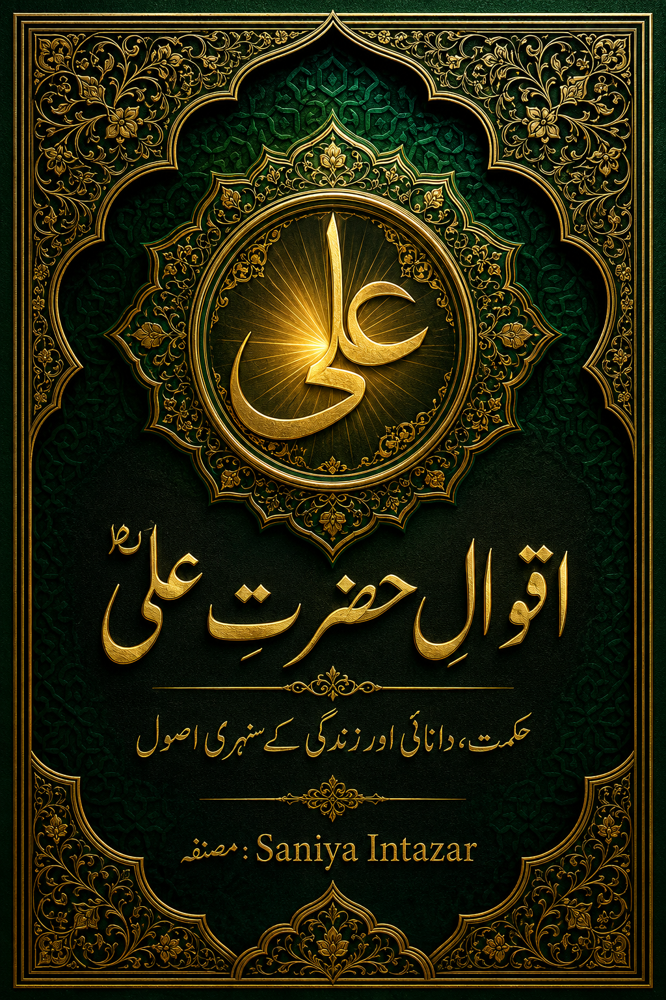

Fahm-ul-Quran: A Simple Guide to Understanding the Quran

Many of us grew up being taught to recite the Quran correctly, letter by letter, long before we were ever taught what those verses actually mean. That gap between reciting and understanding is exactly what Fahm-ul-Quran is about — moving from reading the words to understanding the message behind them.
Whether you're revisiting the Quran as an adult, helping your children study it, or simply want to understand it for the first time in a language that makes sense to you, this guide walks through what Fahm-ul-Quran really means and how to start building it, one verse at a time.
What Does Fahm-ul-Quran Actually Mean?
Fahm is an Urdu and Arabic word meaning "understanding" or "comprehension." So Fahm-ul-Quran simply means understanding of the Quran — grasping the meaning, context and message of the verses, not just their pronunciation.
Recitation (Tilawat) vs. Understanding (Fahm)
Tilawat is the recitation of the Quran, often practiced with tajweed rules to perfect pronunciation. Fahm is a separate skill entirely: it's about knowing what the words you're reciting actually mean. It's completely possible to recite a passage beautifully without understanding a single word of it — and just as possible to understand the Quran's message through translation, without having memorized the Arabic recitation at all. Ideally, a person builds both together, but understanding is the piece most commonly left out of everyday Quran reading.
Why Understanding the Quran Matters
- Guidance becomes practical — verses about patience, honesty or kindness only shape daily behavior once their meaning is understood, not just recited.
- Reading feels meaningful, not mechanical — understanding turns Quran reading from a routine into something you genuinely connect with.
- Questions get real answers — many verses that seem confusing in isolation make complete sense once their historical context is known.
- It's easier to explain to children — a parent who understands the Quran can answer a child's questions instead of saying "we'll learn that later."
Practical Ways to Build Fahm-ul-Quran
1. Start With a Reliable Translation
A clear, well-regarded translation in a language you're comfortable with — Urdu or English — is the starting point. Translations are interpretations of the original Arabic, so reading with an accessible, well-explained translation matters more than reading multiple translations at once.
2. Add Tafseer for Context
Tafseer (commentary) explains the background of a verse: when it was revealed, why, and what it meant to the people who first heard it. A short tafseer note next to a verse often does more for understanding than re-reading the translation alone.
3. Study a Few Verses at a Time
Trying to understand large portions of the Quran in one sitting usually backfires. A few verses, studied properly with translation and brief explanation, build far more lasting understanding than rushing through entire chapters.
4. Reflect (Tadabbur), Don't Just Read
Tadabbur means pausing to reflect on a verse's meaning rather than moving straight to the next one. Even one honest question — "what does this verse ask of me?" — turns passive reading into active understanding.
5. Keep Notes as You Go
Writing down a verse's meaning, a question it raised, or how it applies to your own life gives you something to return to. Over time, these notes become a personal record of how your understanding has grown.
Common Mistakes That Slow Down Understanding
Treating Recitation and Understanding as the Same Thing
It's easy to assume that reciting a passage fluently means you understand it. The two are separate skills, and confusing them is often why understanding gets postponed indefinitely — "I'll understand it once my recitation improves" isn't necessary at all.
Trying to Understand the Whole Quran at Once
Setting a goal like "understand the entire Quran this month" almost always leads to burnout. Fahm-ul-Quran is built verse by verse, not in one long sitting.
Skipping Context
Reading a translation without any context can make certain verses feel confusing or even contradictory. A short note on when and why a verse was revealed usually resolves that confusion immediately.
Building a Daily Fahm-ul-Quran Habit
Consistency matters more than volume. A short daily habit — even five to ten minutes — compounds into real understanding over months.
Morning: One Verse, One Meaning
Read one verse with its translation before starting your day. No need to rush to the next one — let it sit with you.
Weekly: A Short Tafseer Note
Once a week, read a brief tafseer explanation for a verse or passage you've recently studied. This is where context turns a translation into real understanding.
Monthly: Look Back at Your Notes
Flip back through what you've written down. Seeing how many verses you've genuinely understood over a month is often more motivating than any reading streak.
Our Take: The Fahoom-ul-Quran Book
Building Fahm-ul-Quran on your own can feel overwhelming simply because of where to start. Our Fahoom-ul-Quran book is written to remove that guesswork — organizing translation and explanation in a structured, easy-to-follow way, so you can focus on understanding instead of figuring out what to read next.
Whether you're just beginning your journey of understanding the Quran or returning to deepen what you already know, a structured book turns Fahm-ul-Quran from an intimidating goal into a daily habit you can actually keep.
Frequently Asked Questions
What does Fahm-ul-Quran mean?
Fahm-ul-Quran is an Urdu and Arabic phrase that means understanding of the Quran. It refers to grasping the meaning, message and context of the Quran, rather than only reciting its Arabic text.
What is the difference between reciting the Quran and understanding it?
Reciting the Quran (tilawat) focuses on reading the Arabic text correctly, often with proper tajweed. Understanding the Quran (fahm) focuses on knowing what the verses actually mean and how to apply that meaning in daily life. Many readers do one without the other; ideally, both are built together.
Do I need to know Arabic to understand the Quran?
No. While learning Quranic Arabic deepens understanding, a reliable translation and a beginner-friendly tafseer let you understand the Quran's meaning in your own language, such as Urdu or English.
What is tafseer and why does it matter for Fahm-ul-Quran?
Tafseer is a detailed explanation of the Quran's verses, covering their context, background and meaning. It matters because many verses are easier to understand once you know when and why they were revealed, which a plain translation alone doesn't always show.
How much time does it take to build real understanding of the Quran?
There's no fixed timeline. Understanding the Quran is a gradual, lifelong process. Even a few verses studied with translation and reflection each day, kept up consistently, build real understanding over months and years.
Is Fahm-ul-Quran only for scholars or advanced students?
No. Fahm-ul-Quran is for every reader. Beginner-friendly translations and simplified tafseer books are specifically written to make the Quran's meaning accessible to people with no prior Islamic studies background.
What is the best way to start studying the Quran's meaning as a beginner?
Start small: read one or two verses with a trusted translation, then a short explanation of their context. A structured book that organizes this for you, like our Fahoom-ul-Quran, removes the guesswork of deciding what to read and in what order.
Explore the Fahoom-ul-Quran Book →